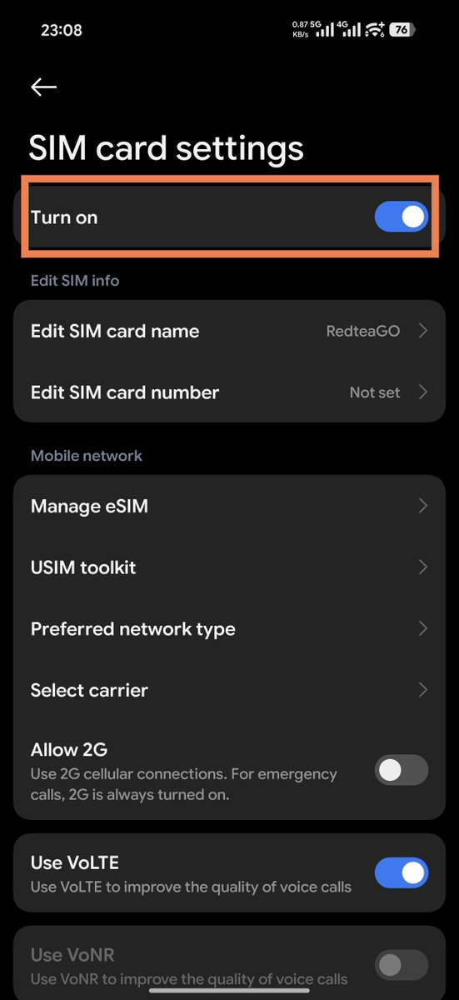

其实，不止eSTK存在此问题，9eSIM等实体eSIM卡在安卓上都有这个问题，别手欠去停用。
比如我把放eSIM实体卡的卡槽关闭了，那么我就没办法启动它了，换其他的卡又正常了。不用去恢复出厂设置，而且我觉得每个人的手机上都有重要数据，为了一张卡去重置，疯了吧🫠
这个时候，你该做的是用ADB连接电脑，输入「adb shell pm clear https://t.co/MwE2RJupfD.providers.telephony」就好了，不用谢。

比如我把放eSIM实体卡的卡槽关闭了，那么我就没办法启动它了，换其他的卡又正常了。不用去恢复出厂设置，而且我觉得每个人的手机上都有重要数据，为了一张卡去重置，疯了吧🫠
这个时候，你该做的是用ADB连接电脑，输入「adb shell pm clear https://t.co/MwE2RJupfD.providers.telephony」就好了，不用谢。

各位用 ESTK 实体 eSIM 卡的千万别手欠在设置里关闭那个卡槽，否则那个配置文件将会永远无法重新启用，即使把它删除后重新下载也不能解决……
目前暂不清楚是 HyperOS 的 bug 还是实体 eSIM 的 bug。系统疑似是通过 ICCID 进行区分不同 SIM 的。 https://t.co/In33ILKVs1
目前暂不清楚是 HyperOS 的 bug 还是实体 eSIM 的 bug。系统疑似是通过 ICCID 进行区分不同 SIM 的。 https://t.co/In33ILKVs1